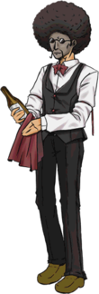

- Welcome to Touhou Wiki!
- Please register to edit. For assistance, check in with our Discord server or IRC channel.
Amakasu Barley Tenji
Amakasu Barley Tenji a̠ma̠ka̠sɯᵝ ba̠ːɺ̠e̞ː tẽ̞nd͡ʑi | |
|---|---|
|
 Amakasu Barley Tenji in Uwabami Breakers The Rooftop Afro StewardMore Character Titles | |
| Species | |
| Age |
At least over 27, unknown |
| Occupation | |
| Location | |
Music Themes | |
| |
Appearances | |
| Official Games | |
| |
- Note: This article is part of the game Uwabami Breakers by the Doujin circle The Drinking Party.
Amakasu Barley Tenji (甘粕・バーレイ・天治 Amakasu Bārei Tenji) is an 80's dancer who loves to disco. He's currently employed at the Twilight Bar Room working as a Bartender and a butler, may also be a waiter, along with Tatsumi Hakkaisan. Isami Asama encounters Amakasu on the rooftop of the Twilight Bar Room (which is called the "Saturday Night Garden") on the final stage of Uwabami Breakers, since he's the final boss. He only shows himself to the highest class of customers.
Character Basis[edit]
Name[edit]
His full name is Amakasu Barley Tenji (甘粕・バーレイ・天治). 甘 (ama, "sweet") and 粕 (kasu, "lees") are essentially the waste product left over from brewing sake, which can be reused in the pickling process. 甘粕 (amakasu) then means something like "the sweet leftovers from brewing". Barley (バーレイ Bārei), being a middle name, is unusual in Japanese. It is a grain often used as a malt in the brewing process. The Egyptians made beer out of barley, and barleywine is still a fairly common alcohol. Lastly, 天 (ten) means "heaven" and 治 (ji) means "govern". This fits his role as a final boss who dances in the night sky after a long night of drunken carousing.
Design[edit]
Amakasu's design shows that he has an afro, a mustache and small round sunglasses, where he wears a black butler vest over a white shirt, adorned with a red bow tie and a thin red ribbon to each of his arms. He also has black trousers and brown shoes. He holds a bottle (wine bottle?) and a red cloth. All this waiter stuff would indicate why he's called a "steward" (執事 shitsuji) in his title, meaning he's also a butler as well as a dancer. Furthermore, he has a dark-skinned face but a light-skinned body.
Relationships[edit]
- Rumi Arie & Tatsumi Hakkaisan
Rumi Arie is Amakasu's employer and Tatsumi Hakkaisan is his fellow employee.
- Isami Asama
Isami Asama may be a possible rival to Amakasu. She is a customer of the Twilight Bar Room. In the ending, Isami was bleeding for more money off Amakasu so she could buy more drinks.
Spell Cards[edit]
| Name | Translated | Comments | Games | Stage | ||
|---|---|---|---|---|---|---|
| Total: 5 | ||||||
| 儀式「とりあえずピッチャー二つで」 | Ritual "Anyway, You Take Two Pitchers, and ... " | UB | St. 3 | |||
| おどり喰い「ダンシングオニオンフライ」 | Dance and Eat "Dancing Onion Fry" | UB | St. 3 | |||
| 光物「ブリリアント〆サバ」 | Shining Thing "Brilliant Shimesaba" | UB | St. 3 | |||
| 度数９６「スピリタスの大銀河」 | 96% "The Great Galaxy of Spiritus" | UB | St. 3 | |||
| 酔生夢死「空飛ぶ呑んべぇのレムリア」 | Drunken Life, Dreamy Death "Lemuria For the Flying Drunkard" | UB | St. 3 | |||
Additional Information[edit]
- Amakasu has some strange abilities compared to other normal-acting characters in the game. He is able to spin his head 360 degrees non-stop and he's able to summon disco balls.
- He's the only character in Uwabami Breakers to have his theme song officially composed by ZUN.
- The name "Saturday Night Garden" is a reference to the American film Saturday Night Fever.
- His favourite line is "You call that danmaku? That fight before was way worse, man". This could possibly mean that he, Rumi Arie and Tatsumi Hakkaisan may know that Gensokyo exists. Also, they use the Spell Card system that is only made for Gensokyo.
Fandom[edit]
Official Profiles[edit]
| ○三面ボス 屋上のアフロ執事
「甘粕・バーレイ・天治」（あまかす・ばーれい・てんじ） 齢８０にして最高のダンサー。 彼のダンスと料理は、黄昏酒場では既に伝説と化している。 彼の口癖は |
Stage 3 boss The rooftop afro steward
Amakasu Barley Tenji Was an incredible dancer in the 80s. His dance and cuisine are already legendary in the Twilight Bar Room. His favorite line is |
Official Sources[edit]
- 2007/12/29 Uwabami Breakers - Official profile, Stage 3, ending
| This page is part of Project Characters, a Touhou Wiki project that aims to write proper descriptions for all official characters of Touhou Project. Please keep the character page guidelines in mind when contributing. |